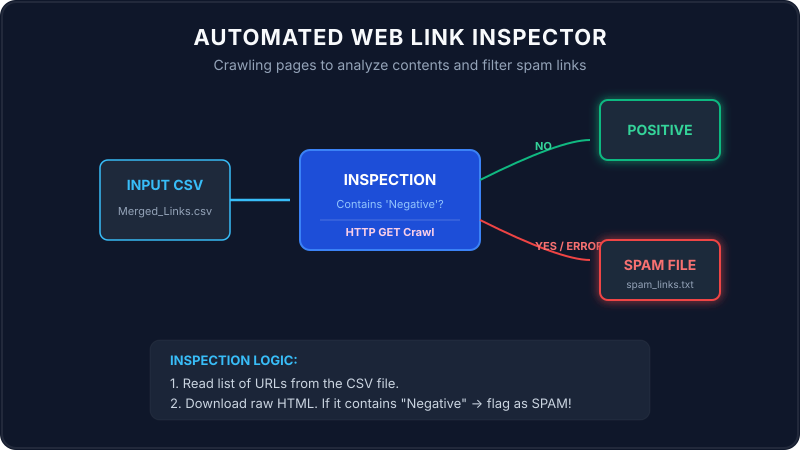

A web crawler (or spider) is a program that automatically connects to the internet, downloads web pages, and analyzes their contents. Crawling is how search engines like Google index the web, and it is also how security software scans for malicious or spam links.
Let's look at how we build a link analyzer in Java using a simple postal inspector analogy.

Imagine you are a postal inspector. You have a delivery list of house addresses (the CSV file containing URLs).
Your job is to identify which houses are sending spam brochures. You follow this process:
- You send a carrier to visit each address on your list (opening an HTTP Connection).
- The carrier knocks, requests their welcome brochure, and reads it (fetching the HTML page source code).
- If the brochure contains a specific flagged word like "Negative", you mark the address as SPAM and write it down in your black book (saved to a new text file).
- If a house is abandoned or has a broken bridge preventing access (HTTP network error), you add it to the black book too, just to be safe!
Walkthrough of the Main Method Scenario
Let's trace how the program executes step-by-step from the entry point of the main method:
The program targets a links list and loads it into memory:
urlsToProcess = readUrlsFromCsv("C:\\Users\\SouravSanuShaw\\Downloads\\Merged_Links.csv");It reads the file line-by-line, trims whitespace, and skips empty rows.
The program loops through the list of URLs and calls `fetchUrlContent(urlString)`:
- It opens a connection:
HttpURLConnection connection = (HttpURLConnection) url.openConnection();. - It sets custom parameters: connection timeout (5s), read timeout (10s), and a browser
User-Agentproperty so the host doesn't block the crawler. - It checks the HTTP response: if it receives code 200 (OK), it downloads the raw HTML string using a
BufferedReader.
The program checks if the downloaded HTML contains the flag word "Negative":
if (pageContent != null && !pageContent.contains("Negative")) {
System.out.println("Status: Positive");
} else {
spamLinks.add(urlString); // Marked as SPAM!
}After processing all links, it writes the spam list to spam_links.txt.
Java Implementation
Below is the complete Java code demonstrating automated link checking and file handling:
package io.practise.accolite;
import java.io.BufferedReader;
import java.io.BufferedWriter;
import java.io.FileReader;
import java.io.FileWriter;
import java.io.IOException;
import java.net.HttpURLConnection;
import java.net.URL;
import java.util.ArrayList;
import java.util.List;
import java.io.InputStreamReader;
public class LinkAnalyzer {
private static final String CSV_FILE_PATH = "C:\\Users\\SouravSanuShaw\\Downloads\\Merged_Links.csv";
private static final String SPAM_LINKS_FILE_PATH = "spam_links.txt";
private static final String NEGATIVE_KEYWORD = "Negative";
private static final int CONNECTION_TIMEOUT_MS = 5000;
private static final int READ_TIMEOUT_MS = 10000;
public static void main(String[] args) {
System.out.println("Starting Link Analysis...");
List urlsToProcess = new ArrayList<>();
List spamLinks = new ArrayList<>();
try {
urlsToProcess = readUrlsFromCsv(CSV_FILE_PATH);
System.out.println("Found " + urlsToProcess.size() + " URLs to process.");
} catch (IOException e) {
System.err.println("Error reading CSV file: " + e.getMessage());
return;
}
for (String urlString : urlsToProcess) {
System.out.print("Processing: " + urlString + " -> ");
try {
String pageContent = fetchUrlContent(urlString);
if (pageContent != null && !pageContent.contains(NEGATIVE_KEYWORD)) {
System.out.println("Status: Positive");
} else {
System.out.println("Status: SPAM (Keyword '" + NEGATIVE_KEYWORD + "' found)");
spamLinks.add(urlString);
}
} catch (IOException e) {
System.err.println("Error visiting or reading: " + e.getMessage());
spamLinks.add(urlString);
}
}
try {
writeLinksToFile(SPAM_LINKS_FILE_PATH, spamLinks);
System.out.println("Successfully saved " + spamLinks.size() + " spam links.");
} catch (IOException e) {
System.err.println("Error writing spam links: " + e.getMessage());
}
}
private static List readUrlsFromCsv(String filePath) throws IOException {
List urls = new ArrayList<>();
try (BufferedReader br = new BufferedReader(new FileReader(filePath))) {
String line;
while ((line = br.readLine()) != null) {
String trimmedLine = line.trim();
if (!trimmedLine.isEmpty()) {
urls.add(trimmedLine);
}
}
}
return urls;
}
private static String fetchUrlContent(String urlString) throws IOException {
HttpURLConnection connection = null;
try {
URL url = new URL(urlString);
connection = (HttpURLConnection) url.openConnection();
connection.setRequestMethod("GET");
connection.setConnectTimeout(CONNECTION_TIMEOUT_MS);
connection.setReadTimeout(READ_TIMEOUT_MS);
connection.setRequestProperty("User-Agent", "Mozilla/5.0");
int responseCode = connection.getResponseCode();
if (responseCode == HttpURLConnection.HTTP_OK) {
try (BufferedReader in = new BufferedReader(new InputStreamReader(connection.getInputStream()))) {
StringBuilder content = new StringBuilder();
String inputLine;
while ((inputLine = in.readLine()) != null) {
content.append(inputLine);
}
return content.toString();
}
} else {
return null;
}
} finally {
if (connection != null) {
connection.disconnect();
}
}
}
private static void writeLinksToFile(String filePath, List links) throws IOException {
try (BufferedWriter bw = new BufferedWriter(new FileWriter(filePath))) {
for (String link : links) {
bw.write(link);
bw.newLine();
}
}
}
} Conclusion
Using standard Java networking libraries like HttpURLConnection makes connecting to sites and
crawling their content simple. Wrapping network fetches in try-catch structures prevents blockages and ensures
link analysis runs to completion, outputting security results safely to disk!